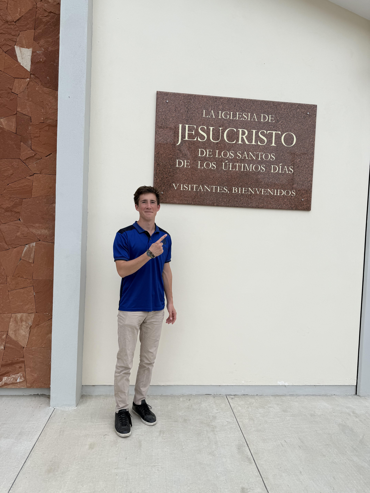

Student • Builder • Communicator • Future Professional
I am a sophomore at Brigham Young University (BYU) Provo, passionate about building, analyzing, and creating meaningful things. I have strong experience in leadership, communication, Excel, and technology gained as a missionary and student. I am fluent in Spanish and enjoy working with people, explaining ideas, and solving problems.